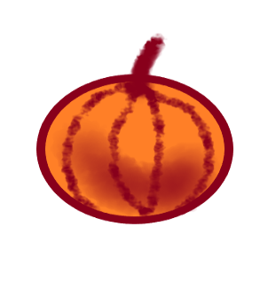

Interaktive Kürbisrotation 15 Grad

So drehst du den Kürbis
Taste 'r' dreht den Kürbis 15 Grad nach rechts
Taste 'l'dreht den Kürbis 15 Grad nach links
Taste 'a'startet und stoppt den Kürbis automatisch
Bild ist selbst gemalt